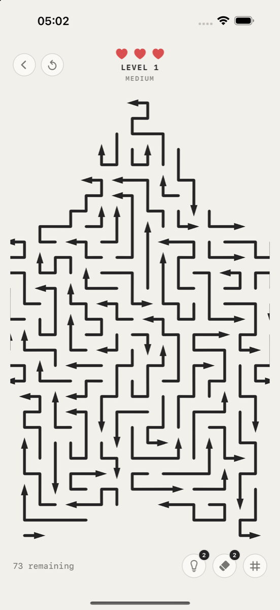
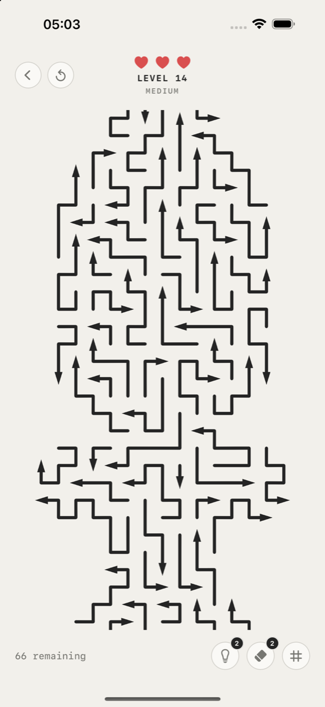
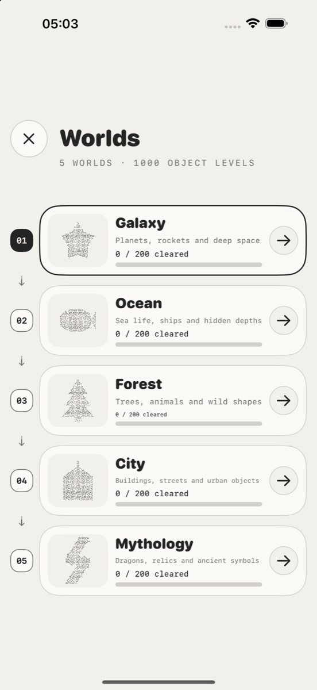

Find the order. Clear the shape.
A thousand puzzles, each one a picture.
Every level is a silhouette drawn out of arrows — a rocket, a whale, a pine tree, a thunderbolt. Each line wants to leave the board, but only one direction is open to it, and something is always in the way.



How it plays
There is no timer and no luck involved. The only question is which line can leave first, and what that opens up for the next one. Tap the wrong one and it bumps into its neighbour and comes back — so the puzzle is in the order, not in your reflexes.
- Galaxy
- Ocean
- Forest
- City
- Mythology
1000 hand-built levels
Two hundred in each of five worlds. Every board is a real silhouette, not a random grid.
No account, no sign-up
Open it and play. Your progress is saved for you, and you can erase everything in one tap.
Plays offline
Every level ships inside the app. A connection is only needed for ads and purchases.
Made to be looked at
Black ink on paper. No score explosions, no countdowns, no five-second reward loops.
Türkçe
ExitLine bir çizgi bulmaca oyunudur. Her bölüm, oklardan çizilmiş bir siluettir: roket, balina, çam ağacı, yıldırım. Her çizgi tahtayı terk etmek ister ama yalnızca tek bir yöne gidebilir ve önünde hep bir şey vardır.
Bir çizgiye dokunduğunuzda okunun yönünde kayıp çıkar. Yanlış olana dokunursanız komşusuna çarpıp geri döner. Süre yok, şans yok — tek soru şu: önce hangisi çıkabilir, ve o çıkınca ne açılır?
Beş dünya (Galaxy, Ocean, Forest, City, Mythology) ve her birinde 200 bölüm olmak üzere toplam 1000 el yapımı bölüm. Hesap açmak gerekmez, oyun çevrimdışı oynanır.
Destek: support sayfası · İletişim: dursunaras@gmail.com